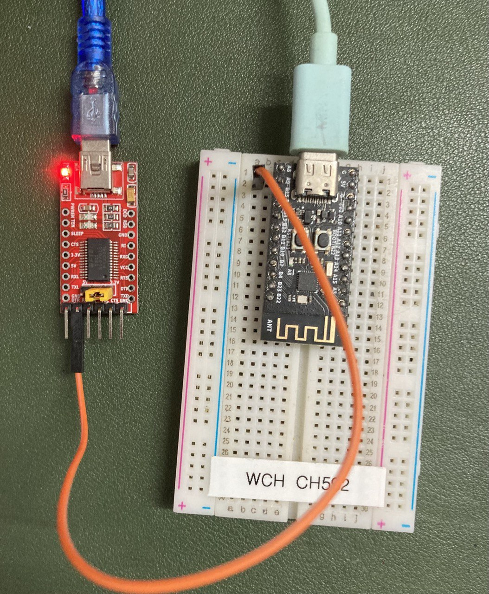
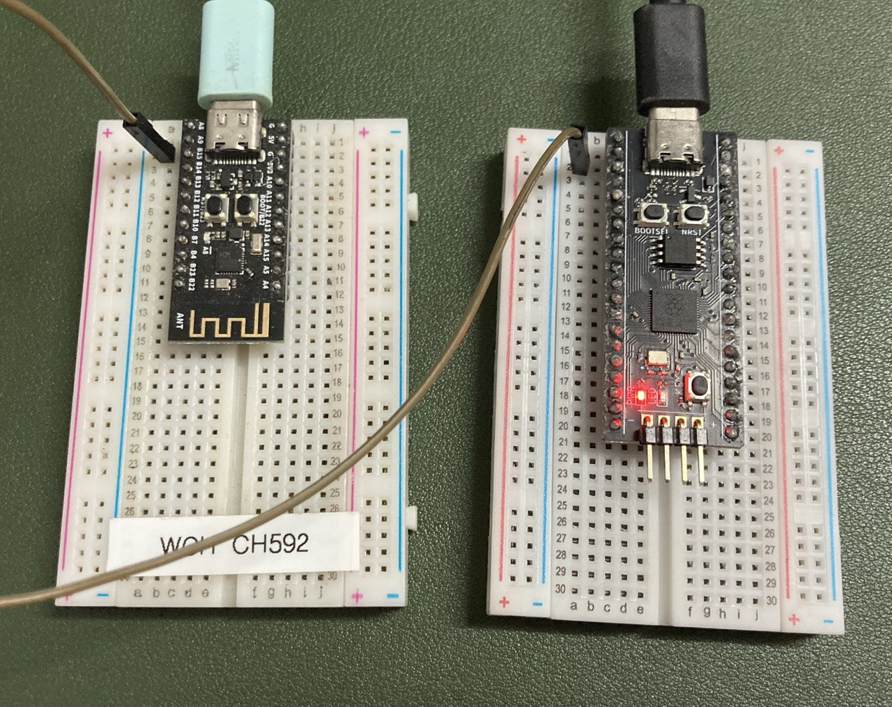

Debugging Kirei with UART
Tags: debugging, firmware.kirei, programming.ch58x, programming.embedded
Kirei is nascent keyboard firmware, which
at the time of writing supports CH58x and RP2040 microcontrollers.
It uses the same declarative approach to keyboards/keymaps that
fak uses; albeit, Kirei’s one step further
around the configuration complexity
clock
as it embeds a DSL into Nickel.
CH58x (and CH592) are MCUs which are both cheap and provide BLE (Bluetooth) functionality. For keyboard enthusiasts, they’re notable because WeAct Studio has a core board for these MCUs (for the CH582F and CH592F).
(There aren’t many keyboards using these core boards; but I recently recorded a demonstration of a prototype I’ve been working on; including tap-hold & layers functionality).
For Kirei’s CH58x platform, it supports logging output to UART.
Here are some notes on viewing that output on a computer:
UART
I see the terms “TTL” and “RS232” mentioned alongside “UART”.
These StackExchange questions are relevant:
- https://electronics.stackexchange.com/questions/274287/what-is-the-difference-between-rs-232-and-ttl-uart
- https://electronics.stackexchange.com/questions/37814/usart-uart-rs232-usb-spi-i2c-ttl-etc-what-are-all-of-these-and-how-do-th
Connecting to Serial Consoles
Some articles discussing how to connect to a serial console:
from Arch Wiki “Working with the serial console”
- I use
screenortio.
- I use
TIO
The Arch Wiki article mentions that tio is intended to replace screen for
this use case, for tmux users.
With the Nix package manager, getting tio is as simple
as nix shell nixpkgs#tio.
To connect to the serial console, the command would be something like:
tio /dev/ttyUSB0 --baudrate 115200(115200 is used as a baudrate, since that’s what the debug.zig sets).
Helpfully, tio output includes the key sequence to quit:
[09:22:12.178] tio v2.8
[09:22:12.178] Press ctrl-t q to quit
[09:22:12.179] ConnectedScreen
With the Nix package manager, getting screen is as
simple as nix shell nixpkgs#screen; although I’d recommend opening a new
terminal emulator window, and not running it within tmux or
zellij.
To connect to the serial console, the command would be something like:
screen /dev/ttyUSB0 115200(115200 is used as a baudrate, since that’s what the debug.zig sets).
Killing the session uses the sequence: Ctrl-a k
Connecting to CH58x’s UART
As the debug.zig code suggests, it’s using A9 to transmit data.
Connecting using FTDI FT232RL USB Adapter
I happen to have an FTDI FT232RL USB adapter.
This can be used to connect a serial console to the UART output.
The jumper on the FTDI board should be changed to 3V3.
Connect a cable from the TX of the CH58x TX (A9) to the RX on the FTDI board.

Then, with the FTDI board connected to the computer, and the CH58x board
powered, connecting to the serial console (/dev/ttyUSB0 with baudrate 115200)
should display output from Kirei:
$ tio /dev/ttyUSB0 --baudrate 115200
[I] Kirei 🌸
...Connecting using CircuitPython
Another way of connecting to the CH58x UART is with an Arduino board or a CircuitPython board.
CircuitPython is much easier to use than Arduino.
I have a WeAct RP2040 core board (which is similar to but not exactly a Raspberry Pi Pico).
CircuitPython firmware can be downloaded from the CircuitPython website. With the RP2040, flashing the uf2 firmware onto the board is very easy. (Connect the device with the boot switch held, then copy the uf2 to the mass storage device).
AdaFruit’s “CircuitPython Essentials” page has some code that’s close to what we want.
Instead of using print(), we’ll write the bytes to the CDC console directly.
Here’s the CircuitPython code for read the bytes from UART, and writing to the CDC console.
"""Relay UART to CDC console."""
import board
import busio
import usb_cdc
uart = busio.UART(None, board.GP1, baudrate=115200)
while True:
data = uart.read(32)
if data is not None:
usb_cdc.console.write(data)
usb_cdc.console.flush()Connect a cable from the TX of the CH58x TX (A9) to the RX on the RP2040 board (GP1).

Then, with the RP2040 board connected to the computer, and the CH58x board powered,
connecting to the serial console (/dev/ttyACM0) should display output from Kirei:
$ tio /dev/ttyACM0
[09:41:43.156] tio v2.8
[09:41:43.156] Press ctrl-t q to quit
[09:41:43.157] Connected
[I] Kirei 🌸
...
🐍Done | 9.0.5
Code stopped by auto-reload. Reloading soon.
soft reboot
Auto-reload is on. Simply save files over USB to run them or enter REPL to disable.
code.py output:
...